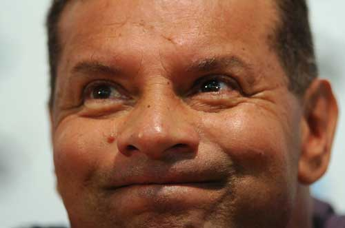

CELSO ROTH É O NOVO TÉCNICO DO #name
Anúncio confirma que Celso Roth volta mais uma vez ao comando do vestiário #nickname
Foi confirmado oficialmente o nome de Celso Roth como o novo técnico do #usualname. Celso Roth foi contratado para tentar afastar os maus resultados do time #nickname.

Celso Roth é o novo treinador do #name
Mesmo com pouco apelo por parte da torcida, Celso Roth tem a confiança de alguns membros da atual diretoria do #usualname e era o nome mais cotado para assumir o comando da equipe.
De volta à casa
Celso Roth retorna ao #name após diversas passagens pelo time e também pelo seu maior rival, o #rival. Na última vez, Roth assumiu o time em um momento de instabilidade. Mesmo com a desconfiança da torcida #wick e um início que parecia pouco promissor, o técnico acabou conseguindo resultados surpreendentemente positivos. Porém, com o tempo, o desgaste com a torcida acabou se intensificando devido a novos resultados inexpressivos.
Além disso, as derrotas nos títulos que disputava se transformaram em motivo de chacota por parte da torcida rival.